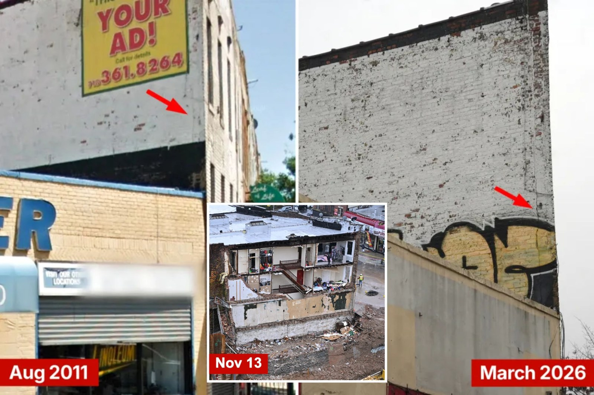

01｜
布鲁克林塌楼前裂缝记录曝光
《纽约邮报》21日查阅影像与文件发现，1321 Flatbush Avenue楼体早在2011年已有裂缝，2026年3月的施工前报告也记录北立面状况不佳、裂缝明显。该楼11日倒塌，造成8人死亡。市楼宇局表示调查仍在进行，事故原因和责任尚未认定。
来源｜纽约邮报

观察｜
临近施工的业主和商户，应保留裂缝影像、检测与投诉记录，核对监测安排，异常变化及时报告。
每天5分钟，读懂纽约变化，把握城市脉动。
暂时无法播放，请再点一次重试。
《纽约邮报》21日查阅影像与文件发现，1321 Flatbush Avenue楼体早在2011年已有裂缝，2026年3月的施工前报告也记录北立面状况不佳、裂缝明显。该楼11日倒塌，造成8人死亡。市楼宇局表示调查仍在进行，事故原因和责任尚未认定。
来源｜纽约邮报

观察｜
临近施工的业主和商户，应保留裂缝影像、检测与投诉记录，核对监测安排，异常变化及时报告。
前交易员Tom Flaschen据财政局新税单估算，非主要住所税向7489套住宅征收约5.63亿美元，绝大多数在曼哈顿。Business Insider据税单计算，泰勒·斯威夫特相关房产新增税款约13.3万美元，1月1日起缴纳。业主诉讼仍在进行，尚未阻止征收。
来源｜Business Insider
观察｜
持有纽约非主要住所的业主，应逐项核对财政局税单、房屋用途和缴纳安排，按自身房产情况核算。
纽约警方21日正式以谋杀、谋杀未遂、勒颈、入室盗窃及袭击等罪名，指控25岁的亚历山大·弗洛伦蒂诺。警方此前在唐人街Catherine Street一栋公寓楼发现一名62岁女子死亡，另有一名66岁男子受伤。死者身份尚未公布，法医仍在确定确切死因。
来源｜Gothamist
观察｜
附近居民及商户可关注警方后续通报，完善楼宇出入管理；刑事指控仍须经过司法审理。
亚马逊将反对纽约市配送保护法案的宣传扩大到包裹标签，称法案可能让每单费用增加最多5美元。拟议法案要求在市内经营仓库的末端配送企业持牌并直接雇用配送人员，实际上将禁止现行第三方承包配送模式。法案尚未通过，5美元是公司的估算，并非已经征收的费用。
来源｜The Verge
观察｜
纽约消费者和依赖平台的商户，应把企业宣传与生效规则分开，跟进法案文本及实际配送收费。

据天气频道21日更新，沿岸风暴预计22日至23日影响纽约等东北城市，带来降雨、阵风及沿海积水风险。
补充详情｜风暴预计周日向东北部移动。报道提醒，沿海在高潮时可能出现积水，部分地区或有树木受损、停电及航班延误。周二满月前后的天文大潮可能加重沿海影响，具体仍取决于路径。
快评｜
周日晚和周一出行前，核对航班与沿海路况。
据Gothamist报道，国家气象局称，感恩节当天可能有第二场沿岸风暴北上，带来降雨和阵风。
补充详情｜气象学家强调，距节日仍有数天，预报不确定性高。周日风暴过后，气温将降至华氏40多度。第100届梅西感恩节游行周四8:30开始，若持续风速超过每小时23英里或阵风超过34英里，气球不能升空。
快评｜
周四出行和观看游行前，持续查看最新预报。
据PIX11报道，Busta Rhymes等21日在东弗拉特布什举办感恩节援助活动，帮助数百户家庭。
补充详情｜活动在PS 135举行，提供火鸡、冬衣及其他生活用品，由州众议员Monique Chandler-Waterman与IAmWondaWoman基金会等参与。现场亦提供社区资源与相关工作坊。
快评｜
节日援助宜结合日常食品和保暖物资供应。
据《商业内幕》21日实测，纽约与俄勒冈州尤金的Trader Joe’s节日采购价差很小。
补充详情｜原始账单纽约上东区为143.31美元，尤金为164.13美元。剔除酒类、奶酪并调整沙拉和肉类重量后，尤金约贵4美元；若纽约补齐缺货的鲜奶油，两地几乎持平。
快评｜
节日采购宜按单价、重量与实际品项比较。
据ESPN报道，消息人士称，大都会与22岁中外野手A.J.尤因就8年9500万美元延长合约达成一致。
补充详情｜合约另含第九年球队选择权，尚待体检，球队未正式宣布。若完成，将是大都会史上最大的仲裁前延长合约，超过赖特2006年的6年5500万美元。尤因今年5月首次登上大联盟。
快评｜
关注体检结果、球队公告及选择权条款。
据美联社报道，尼克斯21日以97比96击败开拓者，布里奇斯压哨投进三分。
补充详情｜布伦森全场30分，其中首节独得19分；沙梅特贡献20分。尼克斯取得四连胜，开拓者近四场比赛输掉三场，这四场均为客场。
快评｜
四连胜延续，关键球处理成为胜负手。

亚马逊称配送法案可能增加费用，金额仍属企业估算；非主要住所税则已在新税单上显现。对纽约家庭和经营者，核算成本要区分宣传、提案和正式账单。无论是物业税、配送费还是节日采购，都应回到自己的房产用途、收费项目和商品单价，避免把他人的估算直接套进预算。
观察指标｜配送法案文本、非主要住所税单及缴纳安排。
品牌展示 · 活动推广 · 机构宣传

评论
你今天最关注哪一条？